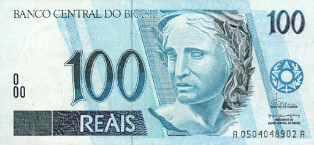

____
Валюта
Валюта в Бразилии - Реал.
Курс: 1 реал - 14 рублей (7 февраля 2021).
Появился реал в 1994 году. На апрель 2011 года в обиходе находятся банкноты номиналом 1, 2, 5, 10, 20, 50 и 100 реалов, а также монеты — 1, 5, 10, 25, 50 сентаво и 1 реал. Кроме этого, законным платёжным средством в Бразилии, являются памятные монеты в 1 реал.

История
Долгое время в качестве средства обмена ими использовались как натуральные продукты, так и деньги различных государств, в основном испанские реалы. Первые монеты на территории Бразилии стали чеканить, во время оккупации северо-восточной части страны, голландцы. Таким образом первой бразильской монетой стал флорин 1652 года выпуска.
В 1690 году реал становится официальной денежной единицей Бразилии. Во множественном числе португальское слово real имеет форму reais или устаревшую reis. В связи с тем, что в основном в Бразилии с 1690 по 1942 годы использовались монеты и банкноты больших номиналов, во многих источниках говорится о том, что официальной валютой Бразилии до 1942 года был «рейс».
Очередная деноминация была проведена в 1967 году. В обращение был введён «новый крузейро», равный 1000 «старым». Особенностью данной замены было то, что старые банкноты из обихода не выводились, а циркулировали с соответствующим штампом. С 1970 года введены банкноты нового образца. Бразильская валюта вновь стала называться «крузейро».
3 марта 1986 года в Бразилии проведена очередная деноминация с введением новой валюты крузадо. 1 крузадо приравнивался к 1000 крузейро. Несмотря на столь частые замены валют, в 1989 году из-за гиперинфляции было проведено очередное удаление трёх нулей с введением в обращение «нового крузадо».
Уже в следующем 1990 году крузадо вновь заменён крузейро в соотношении 1000:1. В 1993 году крузейро вновь были заменены на валюту с названием «крузейро реал» также в соотношении 1000:1. Новая валюта просуществовала ровно год и в 1994 году была заменена реалом. Бразильский реал в сравнении со своими предшественниками является весьма стабильной валютой и находится в обиходе по сегодняшний день.
____